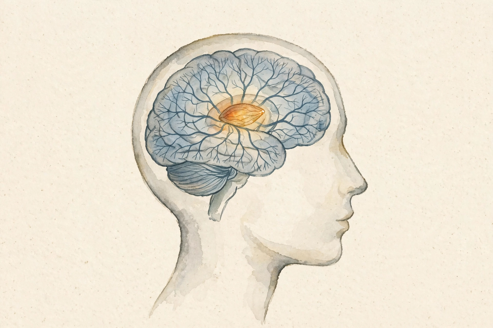
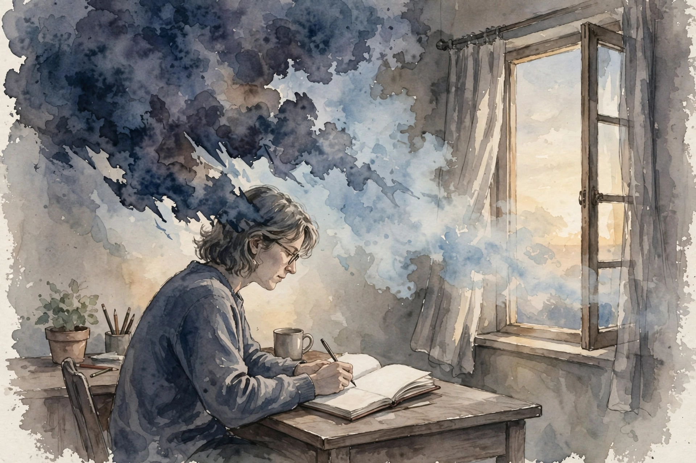
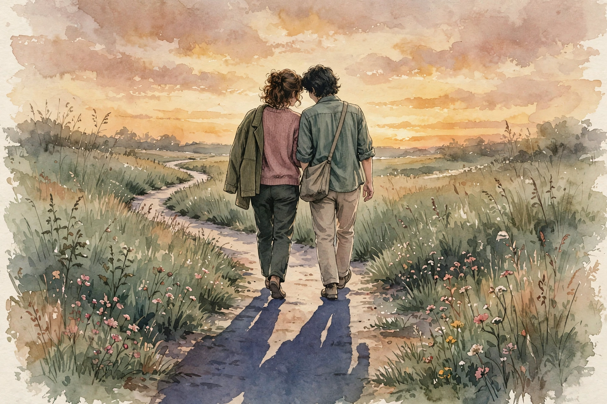

Huberman Lab · Episode Companion
Erasing Fears and Traumas
Andrew Huberman lays out the modern neuroscience of fear: the threat reflex, the almond-shaped structure at its center, and the tools that unlearn fear. The core surprise: you cannot delete a fear. You can only replace it, and five minutes a day of deliberate stress can start the work.
Watch. The official Huberman Lab episode video. Use the chapter menu above to move through this companion as you listen.

Intro: The Framework
Andrew Huberman opens with a promise and a surprise. The episode will cover the biology of fear and trauma, and it will hand over practical tools to confront both. The surprise arrives early: the last ten years of neuroscience revealed ways to extinguish fear with behavioral therapies, drug therapies, and brain-machine interfaces.
He also previews the most counter-intuitive finding of the episode. A recent study showed that five minutes a day of deliberate exposure to stress alleviated longstanding depressive and fear-related symptoms. Stress itself, in the right dose, can combat fear. The rest of the episode explains why.
His framework for the episode runs in order. First, the cells, circuits, and chemicals that give rise to the fear response, and why fear sometimes turns into trauma. Second, the biology of how fear is unlearned, what he calls extinction. Third, the tools.
We can't just eliminate fears. We actually have to replace fears with a new positive event.
Andrew Huberman · Episode ~00:02
The Amygdala and the Threat Reflex
No discussion of fear can skip the amygdala. The word means almond, and the structure is almond-shaped, one on each side of the brain. Huberman asks the listener to stop thinking of it as a fear center and start thinking of it as a critical component of the threat reflex.
The threat reflex works like the reflex that lifts your foot when you step on something sharp. It switches systems on and switches others off. The heart quickens, vigilance rises, attention locks, and energy stores open for movement and thought. At the same time, the calm systems shut down: the parasympathetic system, sleep, the wide panoramic view of the environment, the ability to hear what else is around.
The threat reflex: what switches on, what switches off
Schematic drawn from his description in the episode. Not measured data.
Source: Huberman Lab, Erasing Fears and Traumas, ~00:19. Schematic of the threat reflex as described in the episode.
The amygdala itself is not one thing. It belongs to a larger complex of neurons, the amygdaloid complex, with 12 to 14 areas depending on which neuroanatomist draws the boundaries. Huberman jokes about lumpers and splitters, then picks 12 as a good number. The count matters because the amygdala integrates many kinds of information, not just threat.
Information flows in a clear path. Signals from memory systems like the hippocampus and from the senses, vision, hearing, touch, taste, flow into the lateral portion of the complex. Two main output paths leave it. One runs through the hypothalamus, the collection of neurons that governs primitive drives, and out to the adrenals, the glands that release adrenaline.
Top-Down Control: Narrative Overrides the Reflex
The reflex is powerful, but it is not the whole story. Huberman describes top-down processing, carried out largely through the prefrontal cortex, as the way humans override internal reflexes. The mechanism is a narrative: a story you tell yourself about what happens.
His example is cold water. The body screams to huddle and flee. The narrative says the exposure serves metabolism and resilience, so you stretch out instead. The same machinery works on the threat reflex. You give the experience a new story, and the prefrontal cortex quiets the circuit below.
This is why he insists that narrative and rationalization are undervalued. The prefrontal cortex has an unusual capacity to create meaning and attach purpose to things that are otherwise pure reflex. In the ice bath the example looks trivial. In a car accident, in surviving genocide, in attaching stories of victory to what felt like total loss, the same tool rewires the fear circuitry. He calls narrative one of the most potent ways humans form new relationships to old events over time.
Extinction: Turning the Terrible Story Boring

The classic lab version of fear learning is Pavlovian conditioning. Pair a tone with a shock, and soon the tone alone triggers the freeze. But play the tone again and again with no shock, and the response fades. That reversal is extinction.
The human version is repeated telling. Take a terrible, physiologically troubling story and tell it again in detail, session after session. Each retelling activates the threat reflex at a progressively lower amplitude. The goal is precise and modest: turn the terrible, upsetting story into a terrible, boring story. It never becomes a good story. It becomes a story the body no longer fears.
Extinction: threat-reflex amplitude across retellings
Schematic of his description: each detailed retelling fires the reflex at a lower amplitude.
Source: Huberman Lab, Erasing Fears and Traumas, ~00:58. The curve shape is my schematic of his words: the reflex activates at a progressively lower and lower amplitude.
The three-part sequence runs in a strict order. First, diminish the old experience through repetitive narrative. Second, relearn a new narrative. Third, attach a sense of reward to the formerly traumatic event. Only then does the positive story stick.
This is the logic under prolonged exposure therapy, cognitive processing therapy, and cognitive behavioral therapy. A clinician guides the retelling, the amplitude drops, and the new narrative with its reward gets written over the old circuit.
EMDR: From Skeptic to Convert
Eye Movement Desensitization and Reprocessing, developed by Francine Shapiro in the 1980s, asks a patient to move the eyes side to side while recounting a traumatic narrative, usually with a clinician present. Huberman admits his first reaction as a vision scientist: he thought the whole thing was crazy and half-baked.
The popular explanations did not help. One claimed EMDR recreates the eye movements of REM sleep. He calls that completely false. Another claimed it activates both sides of the brain in some beneficial way. He says no evidence supports that mechanism.
What changed his mind was data. He reviewed no fewer than five papers, in animal models and in humans, on lateral eye movements, side to side with eyes open. Every one showed a dramatic reduction in the activation of the fear circuitry, an actual suppression of the threat reflex. He calls the finding a jaw dropper
.
The proposed mechanism is elegant. Lateral eye movements suppress the amygdala and related circuitry, which lowers anxiety and sympathetic arousal. People feel calmer moving their eyes side to side. The evolutionary story he offers: these are the eye movements of forward self-generated motion, walking through space. Forward movement and fear are generally incompatible. Freezing and retreating are the fear postures. Moving forward tells the threat system to stand down.
He adds two honest limits. Colleagues at Stanford told him EMDR works best for single-event traumas with a brief narrative, a car accident, an assault, not for an entire bad marriage or childhood. And EMDR only taps the extinction half of the process. Someone must still attach the new rewarded narrative afterward.
Social Connection: The Tachykinin Link

One factor shapes every attempt to work through fear: social connection. Huberman grounds it in a molecule, tachykinin, studied in the groups of David Anderson at Caltech and Kerry Ressler at Harvard. The biology is conserved across flies, mice, and humans.
Tachykinin activates in neurons of the central amygdala, squarely inside the threat reflex, soon after a traumatic or fear-inducing event. It sets off changes in gene expression and long-term potentiation that reinforce the fearful experience. It also produces low to moderate anxiety, irritability, and aggression. Social isolation raises tachykinin further, which is one reason isolation worsens old traumas.
The symmetry is the hopeful part. Social connection with people you trust, conversation, a shared meal, touch where appropriate, reduces the levels and the effectiveness of tachykinin. The connection does not need to be physical or dramatic. It needs to rest on trust and stay regular.
He is blunt that this is not hand-wavy advice. There is a neurochemical basis for isolation amplifying fear, and a neurochemical basis for connection relieving it. His practical note: do the hard clinical or individual work on the trauma, and separately keep up the social interactions that quiet the same circuits.
Inherited Predisposition: Trauma Across Generations
The episode then turns to an eerie literature: the transgenerational passage of trauma. The idea saw debate for over fifty years, but recent studies show humans can inherit a predisposition to trauma and fear.
He cites Kerry Ressler's group at Harvard twice. One paper links FKBP5 polymorphisms and childhood abuse to the risk of PTSD symptoms in adults. Another, with Brian Dias as first author, shows that parental olfactory experience changes behavior and neural structure in later generations. The animal work is precise: severe or moderate abuse changes the father's sperm in ways that lower the offspring's threshold for developing trauma or extreme fear.
The critical distinction: what passes down is a predisposition, a bias, not the event. The child does not inherit the parent's trauma. The child inherits a lower threshold. And a predisposition is not a destiny. It is a warning label that says handle with care.
Drug Tools: MDMA, Saffron, Kava
MDMA, also called ecstasy in recreational contexts, now sits under study as an adjunct to psychotherapy for trauma. Huberman stresses it is explored in clinical settings, and he walks through the mechanism that makes researchers take it seriously.
MDMA triggers a massive release of oxytocin, the neuropeptide that drives social bonds. He cites a paper in Psychoneuroendocrinology, Plasma oxytocin concentrations following MDMA or intranasal oxytocin in humans. About 90 to 120 minutes into an MDMA session, average plasma oxytocin reached 83.7 picograms per milliliter, against a typical level of 18.6. Serotonin rises too, and the two systems are closely linked.
Plasma oxytocin: typical level vs 90 to 120 minutes into an MDMA session
Picograms per milliliter, averages from the cited paper. Hover for detail.
Source: Huberman Lab, Erasing Fears and Traumas, ~01:32, citing Plasma oxytocin concentrations following MDMA or intranasal oxytocin in humans (Psychoneuroendocrinology).
Why would that help trauma? The oxytocin and serotonin flood writes safety into the session. Positive experiences get primed to overwrite the traumatic one, and the patient can lean into parts of the narrative they would otherwise hold back from. He describes MDMA-assisted psychotherapy as prolonged exposure, cognitive processing, and cognitive behavioral therapy compacted into a much shorter, much higher-intensity session.
He also covers two milder compounds from the human literature. Oral saffron at 30 milligrams reduced anxiety on the standard Hamilton Anxiety Rating Scale across 12 human studies, in both men and women. Kava, at 150 milligrams of active kava lactones for about three weeks, showed effects in studies spanning ages 18 to 64. He mentions inositol as well, with some evidence for anxiety and for obsessive-compulsive patterns.
Then comes the timing rule, one of the sharpest cautions in the episode. Do not take an anxiety-dampening compound during or before an extinction session. The whole point of the session is to activate the experience at high amplitude and then extinguish it. A drug that blunts the amplitude short-circuits the process. Use such compounds outside the session, to return the system to baseline, never inside it.
The Insula: Matching Intensity
Between the drug tools and the stress protocols, Huberman detours into the insular cortex, the brain region that matches outside intensity to inside response. In most people a mild shock to the skin raises heart rate and blood pressure a little, and an intense shock raises them a lot. The insula keeps that mapping honest.
When the insula is inhibited, the mapping breaks. A mild shock can then trigger a large, sustained jump in blood pressure. The internal response no longer fits the external event. He presents this as one more piece of the fear machinery: trauma is not only a strong response, it can be a miscalibrated one, and recalibration is part of recovery.
Deliberate Brief Stress: Five Minutes a Day
The episode's headline study is a counter-intuitive animal result. Animals under chronic stress show depressive symptoms and elevated glucocorticoids, the same pattern chronic stress produces in humans over weeks or more. Instead of giving the animals relief, the researchers gave them five minutes a day of intense stress, and only five minutes.
The short bouts reversed the effects of chronic stress at the level of glucocorticoids, hormones, and neurotransmitters. The dose made the medicine. When the researchers tried longer daily bouts, about 15 minutes a day, the outcome flipped: the longer stress exacerbated the trauma and the fear.
Daily deliberate stress: the dose decides the direction
Direction of effect from the animal study he describes. Hover for detail.
Source: Huberman Lab, Erasing Fears and Traumas, ~01:48. Brief daily stress reversed chronic-stress effects. Longer daily bouts exacerbated them.
His lab, in collaboration with David Spiegel's lab at Stanford, now adapts this result for human protocols. Two breathing patterns sit at the center. The cyclic sigh, a double inhale through the nose followed by a long exhale, calms people in real time and is the tool for the moment of stress. Cyclic hyperventilation does the opposite on purpose: deep inhales through the nose, exhales through the mouth, and every 25 to 30 breaths a full exhale with the lungs held empty for 25 to 60 seconds, repeated until five minutes are up.
People report heat, wide eyes, agitation, perspiration. That is adrenaline, deliberately released. He warns plainly: anyone prone to panic or anxiety attacks should not do this. The protocol under study runs five minutes a day for two weeks, ideally with clinician support.
It's not just about the state that you're in. It's about the state that you're in plus how you got there and whether or not you directed entry into that state.
David Spiegel, quoted by Huberman · Episode ~01:55
The Spiegel quote is the hinge of the whole protocol. Deliberate entry into the stressed state engages the prefrontal, top-down component that can inhibit the fear circuitry. The same adrenaline that arrives as an ambush becomes training when you summon it yourself. The body learns the sensations of stress under conditions of control, and the fear circuitry rewires around the new association.
Tools Summary and Cautions
Huberman closes by stacking the tools in order of foundation. Sleep, nutrition, and regular movement come first. Then the behavioral tools: narrative retelling for extinction, lateral eye movements as an adjunct, trusted social connection as the chemical backdrop. Then the deliberate-stress protocols, with their strict dose and their panic warning. Then the supplements, kept outside the extinction sessions.
His cautions run through the episode like a refrain. EMDR suits single-event traumas, not whole life histories. Cyclic hyperventilation is off-limits for the panic-prone. Calming compounds do not belong inside extinction work. And none of this replaces a licensed clinician for prolonged exposure, cognitive processing, or cognitive behavioral therapy. The tools are powerful because the circuitry is real, and the circuitry is real enough to deserve respect.
The episode in seven lines
- Fear is a threat reflex with a fixed on-off pattern, built around the 12-area amygdaloid complex.
- You cannot delete a fear. You replace it with a new positive event.
- Retell the terrible story until it bores you. Extinction first, new narrative second, reward third.
- Lateral eye movements suppress the threat circuit. That is the serious mechanism inside EMDR.
- Isolation raises tachykinin and deepens fear. Trusted connection lowers it.
- Trauma can lower the next generation's threshold, but a threshold is not a destiny.
- Five deliberate minutes of stress train the circuit. Fifteen careless minutes feed it.
Distilled from Huberman Lab, Erasing Fears and Traumas (Dec 2021, ~2h14m). Full episode: youtube.com/watch?v=31wjVhCcI5Y. Papers named in the episode: the five lateral-eye-movement papers, Plasma oxytocin concentrations following MDMA or intranasal oxytocin in humans (Psychoneuroendocrinology), the FKBP5 and Brian Dias transgenerational papers, and the 12-study saffron literature.